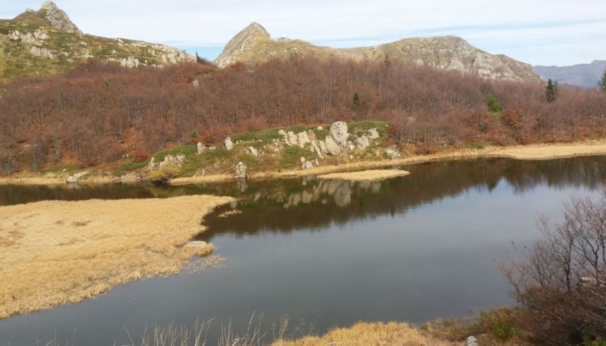
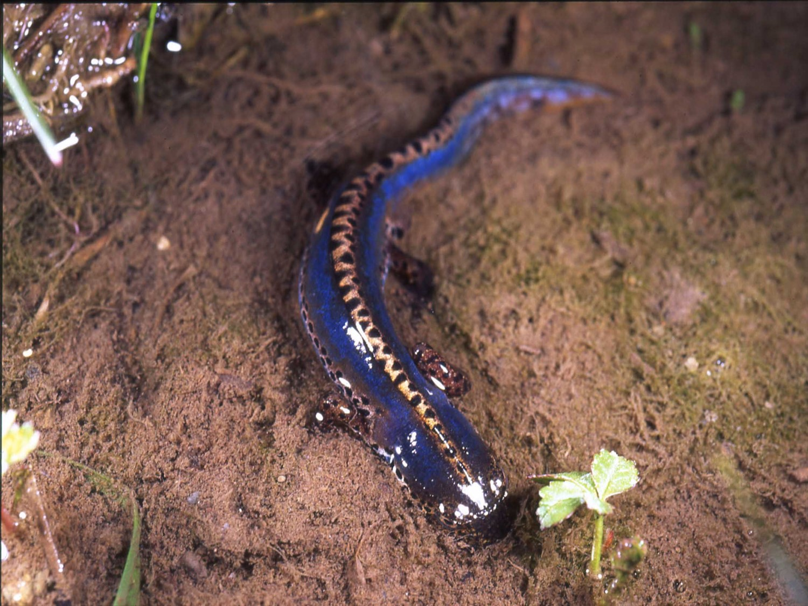
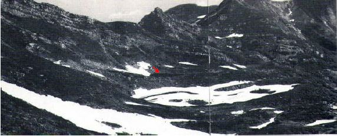
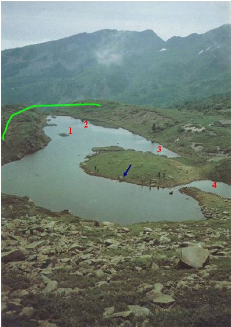
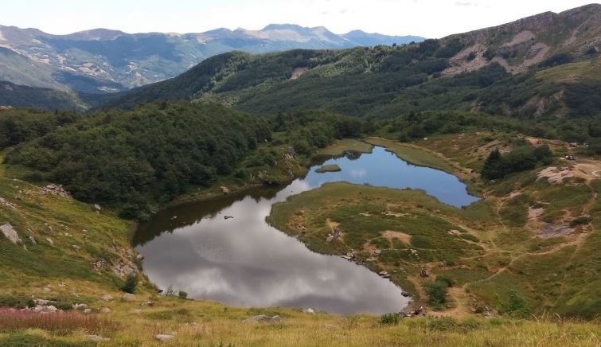

Il Lago Nero
Il Lago Nero è di evidente origine glaciale, si trova ad un’ altitudine di 1730 m, occupa una conca un tempo occupata da un antico ghiacciaio wurmiano (dell'ultima glaciazione), che ha cominciato a ritirarsi circa 15000/10000 anni fa. Il lago poggia su roccia arenaria della serie del Macigno. I ghiacciai sono enormi masse di ghiaccio che si trovano in zone con condizioni climatiche che favoriscono l’accumulo di ghiacci perenni. Essi sono in continuo movimento. La pressione creata dal loro peso favorisce lo scioglimento dello strato basale di ghiaccio favorendo lo scivolamento della massa glaciale a valle. Anche se lento tale movimento provoca un’erosione importante del fondo e delle pendici ai lati; così si formano le valli glaciali, proprio come in parte la valle del Sestaione, quella del Lago Nero. In ogni ghiacciaio si riconoscono:
La zona di accumulo, è questa la zona in cui si crea l'accumulo di ghiaccio;
La zona di ablazione, è questa la zona in cui si scioglie l'accumulo di ghiaccio.
Nel bacino imbrifero del lago, piccolo perché è circa 16 volte la superficie del lago (7858 m2), cadono mediamente 2300 mm di precipitazioni annue. Circa 1/3 della superficie del lago è occupata da un popolamento di Carex rostrata, pregiato dal punto di vista naturalistico.
La profondità è di circa 1,5 m. Per circa 4 mesi e mezzo all’anno la superficie è ricoperta per più del 90% da ghiaccio. La temperatura media annua è di 8,2 °C.

I tritoni del Lago Nero
Grazie alle particolari condizioni del lago si è potuta affermare una nutrita popolazione di Tritoni alpestri, Ichthyosaura alpestris. Si tratta di un anfibio caudato appartenente alla famiglia dei Salamandridi. Vive fra i 500 e i 2000 m di altitudine. Da uno studio condotto recentemente (Vergari S., Monitoraggio chimico – fisico e biologico del Lago Nero (Abetone, Pistoia): primi risultati, 2013) risulta che il loro numero è massimo nel lago durante l’estate e comincia ad aumentare tra maggio e giugno, quando la temperatura dell’acqua comincia a superare i 5°C.



Risalita del limite degli alberi
Come risulta evidente dalle 3 foto, la prima degli anni ’50, la seconda degli anni ’70 e l’ultima degli anni 2000, è evidente il progressivo avanzare della vegetazione attorno al lago. Ora una sponda è colonizzata da una fitta faggeta, quando 50 anni fa solo erbe popolavano le sponde ed ancora meno vegetazione era visibile negli anni ’50. Ciò è evidentemente dovuto al cambiamento climatico in atto e all’aumento della temperatura media. In questa valle, così ricca di relitti glaciali dovuti al particolare microclima della zona, questi cambiamenti potrebbero comportare la perdita irreversibile di specie rare e popolamenti di notevole interesse biologico.
L’Alpe delle Tre Potenze e l’antica Via dei Remi
Il Monte Alpe Tre Potenze (1940 m. s.l.m.) è così chiamato perché un tempo indicava il confine fra tra il Granducato di Toscana, il Ducato di Modena e il Ducato di Lucca.
L’Alpe delle Tre Potenze ci ricorda le imprese di Annibale che, dopo aver superato con fatica le Alpi, dovette superare anche gli Appennini. A ricordo di tale impresa il valico che mette in comunicazione la valle delle Tagliole (provincia di Modena) e la val di Luce (provincia di Pistoia) è stato chiamato “Passo di Annibale”. L’Alpe delle Tre Potenze ha caratterizzato la geografia politica di tutta questa zona, infatti ha segnato prima il confine tra le regioni romane della Tuscia e dell’Emilia e poi quello tra i territori di Lucca, Modena e Pistoia. Prima della costruzione della nuova strada per Modena situata sul versante destro della Lima, una delle principali direttrici per superare l’Appennino in direzione di Modena era rappresentata dal percorso sul lato sinistro della Lima che da Cutigliano, il Melo, Rivoreta raggiungeva Fiumalbo attraverso la Foce delle Verginette, in antico nota anche come Serra delle Motte, tra il Monte Maori e il Libro Aperto. La nuova strada da San Marcello superava il torrente Lima, incrociava la strada per Lucca e proseguiva. Dopo il torrente Sestaione la strada era più aspra per raggiungere Pianosinatico e quindi il valico attraverso la foce di Boscolungo, l’unico percorso che era praticabile. I centri più abitati ed importanti restarono quelli sul versante orientale della Lima e i pochi paesi posti sul lato occidentale si svilupparono con il turismo invernale e estivo. Negli anni trenta del XX sec. l'ingegnere Lapo Farinata degli Uberti, discendente di una nobile famiglia fiorentina, progettò la costruzione di una gigantesca torre sulla vetta dell'Alpe delle Tre Potenze, torre dotata di un grande faro che con la sua luce avrebbe dovuto illuminare la nuova stazione sciistica.
Il ponte sul Sestaione a Casotti di Cutigliano
È una delle più importanti opere della nuova strada voluta da Pietro Leopoldo per collegare Pistoia e il Granducato di Toscana a Modena e agli stati asburgici dell’Italia settentrionale. Progettato dal gesuita Leonardo Ximenes, il ponte sul torrente Sestaione fu terminato tra il 1780 e il 1781. Esso era formato da due arcate ellittiche sostenute da un pilastro centrale, la cui base poggiava sull'alveo del torrente. Distrutto durante la Seconda Guerra Mondiale, fu ricostruito nel 1948 dall'architetto Alidamo Preti sulla base dei disegni del modello originale.
L’antica via dei remi
Per la sua felice posizione geografica “di confine”, il Lago Nero è stato in passato luogo di transito di eserciti, viandanti, pellegrini. Sospesa tra storia e leggenda, ricca di misteri ancora da svelare, è la “via dei remi”, un’antica via di collegamento tra le foreste di Boscolungo (Abetone) e l’Arsenale di Pisa.
Tra il XVI e il XVII secolo, la Marina del Granducato di Toscana era in forte espansione e per costruire e riparare le galere era necessaria una grande quantità di tronchi lunghi e dritti. Quelli di faggio ben si adattavano allo scopo e la località di Boscolungo nella montagna pistoiese ne era particolarmente ricca, il problema era quello di trasportare i “remi” fino all’Arsenale pisano. Considerando che il trasporto dei tronchi sarebbe stato assai disagevole lungo le mulattiere conosciute, si pensò di sfruttare le risorse fluviali.
I tronchi di faggi e abeti che venivano ritenuti idonei per le finalità navali venivano trasportati da Boscolungo fino al Lago Nero, da qui fino al Passo della Vecchia, costeggiavano il Lago Piatto e arrivavano al Passo di Annibale. Da questo valico i “remi” scendevano fino a Foce a Giovo. Aggirando il Monte Rondinaio venivano trasportati fino a Barga. La località “Arsenale” ricorda, non a caso, i capannoni nei quali venivano depositati i tronchi degli alberi in attesa che le acque del Serchio s’ingrossassero rendendone agevole il trasporto. I “remi” venivano raccolti in zatteroni chiamati “magliate” e condotti al mare.
Con il passare del tempo e l’emergere di nuove tipologie di imbarcazioni, la “via dei remi” perse la sua importanza e già alla fine del XVII non veniva più praticata. Oggi le fronde degli alberi e le acque dei laghi nascondono le tracce di questa antica via.